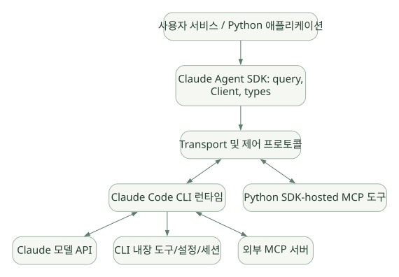

SECOND STUDY / SDK와 CLI 실행 책임
SDK와 CLI 실행 책임
이번 단원의 읽는 관점
공개 Python 코드의 통신과 문서화된 CLI 동작을 나눠 읽습니다.
살펴볼 경계모델 API·SDK·CLI·외부 Tool의 실행 주체를 구분하세요.
이 페이지의 세부 목차
Part I. 시스템 경계와 실행 책임
1. Claude Agent SDK를 정확히 정의하기#
Claude Agent SDK는 Python/TypeScript 앱 안에서 Claude Code가 제공하는 Agent 실행 루프, 기본 도구, 컨텍스트 관리와 권한 모델을 프로그래밍 방식으로 사용하게 하는 SDK다. claude-agent-sdk Python 패키지는 기본적으로 Claude Code 실행 바이너리를 포함하며, 패키지 설치 후 사용자 앱이 별도로 모든 도구 호출 루프를 구현할 필요가 없다. [DOC: D01, D02, R01]
한 문장으로: 외부 프로세스로 실행되는 Agent Harness를 SDK와 프로토콜로 제어하는 방식이다.
1.1 네 계층#
가로로 이동해서 읽을 수 있습니다. 도식 크게 보기 ↗

원문의 학습용 도식입니다. 연결 방향·분기 조건·점선·쌍방향 연결을 보존해 세로로 배치했습니다. 실제 구현·의사코드·해석의 구분은 본문을 함께 읽으세요.
도식 원문 보기 (Mermaid)
flowchart TB
A[사용자 서비스 / Python 애플리케이션] --> B[Claude Agent SDK: query, Client, types]
B --> C[Transport 및 제어 프로토콜]
C <--> D[Claude Code CLI 런타임]
D <--> E[Claude 모델 API]
D --> F[CLI 내장 도구/설정/세션]
D <--> G[외부 MCP 서버]
C <--> H[Python SDK-hosted MCP 도구]위 그림에서 B와 C는 Python 공개 코드로 추적 가능하다. D의 세부 Agent Loop는 공식 문서의 동작 설명으로 이해한다. CLI가 직접 실행하는 Tool과 Python에서 실행되는 SDK MCP Tool은 같은 이름의 Tool처럼 보일 수 있어도 운영·프로세스·권한 경계가 다르다.
1.2 SDK는 라이브러리인가, 프레임워크인가?#
- 배포 형태: Python 패키지로 설치해
import하는 SDK/라이브러리. - 제공하는 추상화: Agent의 실행 루프, Tool 사용, 권한 설정과 세션을 포함하는 프레임워크적 기능.
- 설계 철학: 외부에서 이미 구현된 CLI Harness에 고수준 접근을 제공하는 runtime-backed SDK.
- 따라서 '라이브러리라서 프레임워크가 아니다'와 '완성형 Agent Framework이므로 Python 코드가 Loop를 구현한다' 모두 과도한 단순화다.
1.3 Python SDK의 강점과 대가#
| 얻는 것 | 동시에 발생하는 비용·제약 |
|---|---|
| 적은 사용자 코드로 에이전트 작업 실행 | 실행 바이너리와 프로세스 수명 관리 |
| 내장 파일·쉘 Tool, Skills, Subagent 등 | 권한·파일·네트워크·비밀정보 경계 관리 필요 |
| 스트리밍 메시지 및 양방향 제어 | 비동기 프로토콜·연결 실패·취소 상태 처리 |
| Transcript·Resume 지원 | 워커 수명·디스크·저장소 일관성 고려 |
| CLI가 진화하면 기능을 재사용 | 내부 엔진 구현의 가시성·수정 가능성 제한 |
2. Claude API Tool Runner와의 차이#
Claude API의 Python SDK anthropic에서 모델을 호출하거나 별도 Tool Runner를 사용하는 경우, 도구 루프의 운영·실행 방식은 API SDK의 계약을 따른다. Claude Agent SDK는 Claude Code 실행 환경을 별도 프로세스로 운영한다. 동작 결과가 비슷해 보여도 실행 주체, 기본 Tool, 권한 규칙, 세션 파일, 디버깅 경계가 다르다. [DOC: D01]
비교 질문: Tool 호출의 최종 실행 주체가 앱 코드인가? 별도 CLI인가? 플랫폼 서비스인가? 이 질문으로 Agent SDK·OpenAI Agents SDK·PydanticAI·Managed Agents를 구분할 수 있다.
3. 요청 한 건의 전체 실행 시퀀스#
| 순서 | 보내는 쪽 → 받는 쪽 | 호출 내용·조건 |
|---|---|---|
| 1 | Python App → Python SDK | query(prompt, options) |
| 2 | Python SDK → Transport / Query | Transport 생성 및 connect |
| 3 | Transport / Query → Claude Code CLI | CLI subprocess 시작 |
| 4 | Transport / Query → Claude Code CLI | initialize control request |
| 5 | Claude Code CLI ⇢ Transport / Query | initialize response |
| 6 | Transport / Query → Claude Code CLI | user JSON message |
| 7 | Claude Code CLI → Model API | 모델 요청 |
| 8 | Model API ⇢ Claude Code CLI | assistant + tool_use |
| 9 | Claude Code CLI ⇢ Transport / Query | tool_use / control request 등 |
| opt Python 측 승인 또는 SDK MCP 실행 필요 | ||
| 10 | Transport / Query → Python SDK | hook/can_use_tool/mcp 요청 |
| 11 | Python SDK ⇢ Transport / Query | callback / JSON-RPC 결과 |
| 12 | Transport / Query ⇢ Claude Code CLI | control response |
| end | ||
| 13 | Claude Code CLI → Model API | tool result 포함한 후속 요청 |
| 14 | Model API ⇢ Claude Code CLI | 최종 응답 |
| 15 | Claude Code CLI ⇢ Transport / Query | assistant + result |
| 16 | Transport / Query ⇢ Python SDK | 메시지 파싱 |
| 17 | Python SDK ⇢ Python App | Message objects |
| 18 | Python App → Python SDK | iterator 종료/close |
| 19 | Python SDK → Transport / Query | shutdown |
원문의 학습용 도식입니다. 호출 방향과 반복·분기·참고를 순서표로 보존했습니다. 실선 →와 점선 ⇢를 구분합니다. 실제 구현·의사코드·해석의 구분은 본문을 함께 읽으세요.
도식 원문 보기 (Mermaid)
sequenceDiagram
participant App as Python App
participant SDK as Python SDK
participant IO as Transport / Query
participant CLI as Claude Code CLI
participant API as Model API
App->>SDK: query(prompt, options)
SDK->>IO: Transport 생성 및 connect
IO->>CLI: CLI subprocess 시작
IO->>CLI: initialize control request
CLI-->>IO: initialize response
IO->>CLI: user JSON message
CLI->>API: 모델 요청
API-->>CLI: assistant + tool_use
CLI-->>IO: tool_use / control request 등
opt Python 측 승인 또는 SDK MCP 실행 필요
IO->>SDK: hook/can_use_tool/mcp 요청
SDK-->>IO: callback / JSON-RPC 결과
IO-->>CLI: control response
end
CLI->>API: tool result 포함한 후속 요청
API-->>CLI: 최종 응답
CLI-->>IO: assistant + result
IO-->>SDK: 메시지 파싱
SDK-->>App: Message objects
App->>SDK: iterator 종료/close
SDK->>IO: shutdown정확성 주의: 모델과 CLI 간 API 요청의 세부 함수명, 프롬프트 생성/압축/권한의 전체 내부 구현은 Python 코드로 검증할 수 없다. 다이어그램의 해당 연결은 [DOC] 수준이다.
4. 어디까지 소스 분석이 가능한가?#
| 분석 대상 | 증거 수준 | 이유 |
|---|---|---|
query() → InternalClient → Query |
[SRC] | 소스 공개 |
| 명령행 플래그 구성과 subprocess 실행 | [SRC] | subprocess_cli.py 공개 |
| line-delimited JSON 전송·메시지 파싱 | [SRC] | transport, message_parser.py 공개 |
| SDK MCP JSON-RPC 라우팅 | [SRC] | Query._handle_sdk_mcp_request 공개 |
| Hook/Permission 콜백 ID 매핑 및 응답 | [SRC] | Query.initialize, _handle_control_request 공개 |
| CLI 내부 모델→Tool 스케줄러 구현 | [DOC]/[UNV] | 실행 바이너리 전체 알고리즘 공개 아님 |
| Prompt 압축 내용 선정 알고리즘 | [DOC]/[UNV] | 기능은 문서화, 세부 함수는 비공개 |
| Background Subagent 내부 스케줄러 | [DOC]/[UNV] | API 동작은 문서화, 전체 엔진 비공개 |
이 경계를 지키지 않으면 '코드 레벨 분석'이라고 말하면서 사실상 공식 문서를 설명한 것에 불과하게 된다.